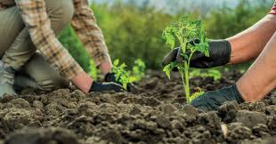

.jpg)
Pequenos Produtores
"Os alimentos que vão para a mesa de milhares de brasileiros são oriundos, boa parte, de pequenos agricultores."
O que são?
Considera-se como agricultura de pequeno porte o conjunto de produtores rurais que operam nos menores módulos de produção e utilizam mão de obra da família, o que inclui produtores de frutas e verduras, produtores integrados a agroindústrias ou agricultores de assentamentos de reforma agrária.
Qual a sua importancia?
"As propriedades rurais brasileiras de pequeno e médio porte são compostas por grande parte dos agricultores do país, geralmente são trabalhadores rurais que produzem diversas culturas com pouca tecnologia e mão de obra familiar. Ocasionalmente essas propriedades são desprovidas de aplicação de técnicas, tecnologias e conhecimentos, diante disso, sua produção agropecuária e agrícola é de baixa produtividade. Mesmo com as adversidades, esses produtores respondem por grande parte dos alimentos dispostos no mercado interno, boa parte dos alimentos da mesa dos brasileiros é oriunda dos pequenos agricultores"
Asiim, pequenos agricultores desempenham um papel crucial na produção de alimentos e na sustentabilidade agrícola. Com suas práticas tradicionais e conhecimento local, muitas vezes são os guardiões da biodiversidade e da preservação ambiental. No entanto, enfrentam desafios como acesso limitado a recursos, tecnologia e mercados. Apoiar esses agricultores não apenas fortalece a segurança alimentar, mas também promove uma agricultura mais sustentável e inclusiva.
Qual papel desempenha nas cidades?
Os pequenos produtores desempenham um papel essencial no abastecimento das cidades, fornecendo uma variedade de produtos frescos e cultivados localmente. Suas fazendas e hortas urbanas não apenas garantem acesso a alimentos saudáveis, mas também reduzem a pegada de carbono associada ao transporte de alimentos. Além disso, os pequenos produtores muitas vezes promovem práticas agrícolas sustentáveis, como a agricultura orgânica e a permacultura, contribuindo para a qualidade ambiental das áreas urbanas. Além disso, esses produtores frequentemente promovem a educação alimentar e o engajamento da comunidade, criando conexões entre os moradores e a origem de seus alimentos. Em resumo, os pequenos produtores desempenham um papel vital na construção de comunidades urbanas mais saudáveis, sustentáveis e conectadas com a natureza.